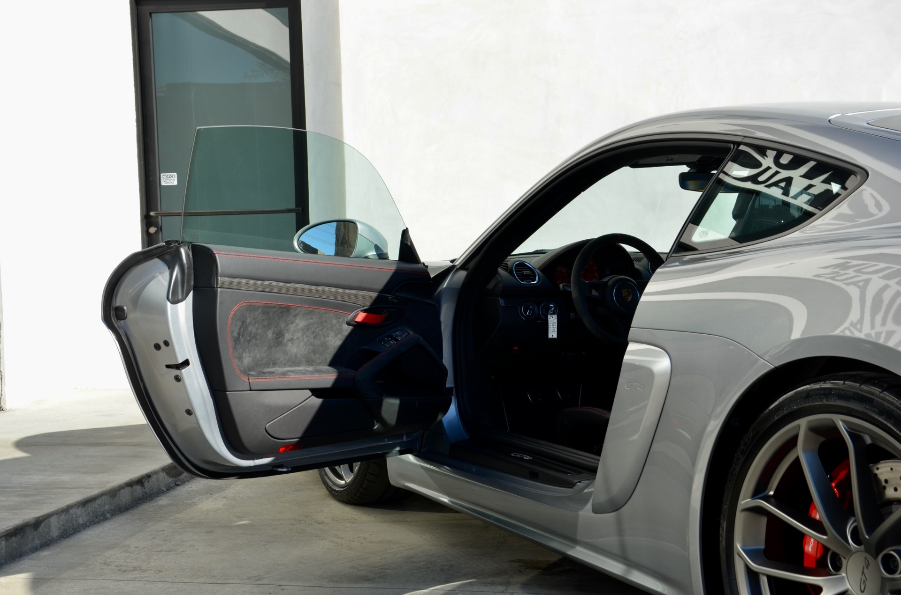

Аварійне відкриття авто в Ужгороді — без пошкоджень, виїзд 15–30 хв

Залишили ключі в салоні? Загубили єдиний комплект? Заклинив замок дверей або не реагує брелок? Seven Keys у вас в Ужгороді відкриє ваше авто без подряпин і пошкоджень за 15–30 хвилин після виклику. Ми працюємо з усіма марками — від Daewoo Lanos до BMW X7, з механічними замками і сучасними keyless-системами.
Виїжджаємо цілодобово, 7 днів на тиждень по Ужгороду та Закарпатській області. У 90% викликів вирішуємо проблему на місці: відкриваємо двері, витягаємо ключ із замка, ремонтуємо особистинку або одразу виготовляємо новий ключ.
Зачинили авто? Дзвоніть прямо зараз
Майстер виїде протягом 15–30 хвилин по Ужгороду
Коли потрібне аварійне відкриття авто
- Ключі залишились у салоні, а двері захлопнулись
- Загубили ключі або не можете їх знайти
- Зламався ключ у замку дверей або в замку запалювання
- Розрядився акумулятор брелока keyless-доступу, авто не реагує
- Заклинив замок дверей після удару, морозу чи вологи
- Не відкривається кришка багажника, бензобак чи капот
- Заблокувалась центральна замочна система
- Дитина закрилась у салоні — приїжджаємо позачергово
Як ми відкриваємо авто без пошкоджень
Ми використовуємо професійний інструмент, а не "відмички з YouTube". У нашому арсеналі:
- Повітряні подушки (Air Wedge) — створюють зазор без деформації ущільнювача
- Спеціальні гачки і петлі під різні моделі — підчіпляють внутрішню кнопку
- Декодери замків — вибір для висновних замків преміум-авто
- Імпресія — виготовлення нового ключа за відбитком у замку
Жодних викруток у дверях, жодних розбитих скла. Якщо інакше неможливо — попередимо завчасно і узгодимо з вами.
Ціни на аварійне відкриття авто в Ужгороді
| Послуга | Ціна |
|---|---|
| Виклик майстра по Ужгороду | входить у вартість |
| Відкриття легкового авто (стандарт) | від 500 грн |
| Відкриття преміум / keyless авто | від 800 грн |
| Витягання обламка ключа з замка | від 400 грн |
| Відкриття багажника / лючка бензобака | від 400 грн |
| Нічний виклик (22:00–07:00) | +200 грн |
| Виїзд по Закарпатській області | за домовленістю |
| Виготовлення нового ключа на місці | від 1500 грн |
* Ціна залежить від моделі авто, типу замка та часу доби. Точну вартість скажемо по телефону.
З якими марками працюємо
Відкриваємо будь-які легкові, кросовери та комерційні авто. Найчастіші:
- Європейські: BMW, Mercedes-Benz, Audi, Volkswagen, Skoda, Volvo, Porsche, Opel, Renault, Peugeot, Citroën, Fiat
- Японські та корейські: Toyota, Honda, Nissan, Mazda, Mitsubishi, Subaru, Lexus, Infiniti, Kia, Hyundai, SsangYong
- Американські: Ford, Chevrolet, Chrysler, Jeep, Dodge, Cadillac
- Бюджетні: Daewoo, ZAZ, ВАЗ, Lada, Geely, Chery
Як викликати майстра
- Зателефонуйте за номером +38 (099) 605-78-86
- Назвіть марку, модель і рік авто, опишіть ситуацію
- Скажіть адресу і скільки місця для роботи навколо машини
- Підготуйте документи на авто — техпаспорт, права
- Чекайте майстра 15–30 хвилин по Ужгороду
Виклик майстра — 15–30 хв по Ужгороду
Працюємо без вихідних, нічні виклики також приймаємо
Часті запитання
Чи дійсно нема пошкоджень після відкриття?
Так. Професійний інструмент проектується саме для цього: з'єднання, ущільнювачі, фарба і скло залишаються в тому ж стані. Цим ми відрізняємося від "майстрів з ломом", після яких часто потрібно міняти ущільнювач або фарбувати ребро дверей.
Чи можу я викликати, якщо авто не моє (наприклад, друга)?
Тільки за згодою власника та з документами на авто. Це обов'язкова умова — ми не відкриваємо машину без підтвердження права на неї.
Що робити, якщо ключ один і він зник?
Відкриємо авто, а потім на місці або в майстерні зробимо вам новий ключ — включно з прив'язкою чіпа до іммобілайзера. Вертатися до офіційного дилера не потрібно, заощадите час і гроші.
Скільки триває відкриття?
Сама операція — 5–20 хвилин залежно від моделі. З урахуванням виїзду — 30–60 хвилин у звичайних умовах.
Чи виїжджаєте за межі Ужгорода?
Так, по всій Закарпатській області — Мукачево, Берегове, Виноградів, Хуст, Тячів, Рахів. Ціна виїзду залежить від відстані, узгоджується по телефону.